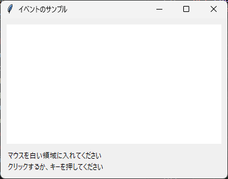
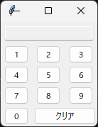

6. イベント処理
ユーザーの操作に応じて処理を実行するには、command オプションを使う方法と、bind メソッドを使う方法があります。
6.1 command による処理
Button や Checkbutton などのウィジェットは、command オプションに指定した関数を、ウィジェットが操作されたときに呼び出します。
ウィジェット |
関数が呼び出される操作 |
|---|---|
Button |
クリックされたとき |
Checkbutton、Radiobutton |
選択状態が変わったとき |
Scale |
値が変わったとき（現在の値が引数として渡されます） |
Spinbox |
矢印ボタンで値が変わったとき |
Menu の項目 |
項目が選ばれたとき |
Scale 以外では、関数は引数なしで呼び出されます。command は手軽ですが、ウィジェットごとに決められた操作にしか対応できません。それ以外の操作に対応するには、次節の bind を使います。
6.2 bind による処理
bind メソッドを使うと、マウスの移動やキー入力など、さまざまなイベントに関数を結び付けられます。
widget.bind("<Button-1>", on_click)
最初の引数はイベントの種類を表す文字列（イベントシーケンス）で、2 番目の引数はイベントが発生したときに呼び出す関数です。この関数には、イベントの情報を持つ tk.Event オブジェクトが 1 つ渡されます。
次のサンプルコードは、マウスの座標、クリック、キー入力の情報を画面に表示します。
1"""第 6 章: bind によるイベント処理のサンプルです。
2
3マウスの位置、クリック、キー入力の情報を画面に表示します。
4"""
5
6from __future__ import annotations
7
8import tkinter as tk
9from tkinter import ttk
10
11
12def main() -> None:
13 """マウスとキーボードのイベントを表示するウィンドウを表示します。"""
14 root = tk.Tk()
15 root.title("イベントのサンプル")
16
17 area = tk.Frame(
18 root, width=360, height=200, bg="white", cursor="crosshair"
19 )
20 area.pack(padx=10, pady=10)
21
22 position = tk.StringVar(value="マウスを白い領域に入れてください")
23 last_event = tk.StringVar(value="クリックするか、キーを押してください")
24 ttk.Label(root, textvariable=position).pack(anchor="w", padx=10)
25 ttk.Label(root, textvariable=last_event).pack(
26 anchor="w", padx=10, pady=(0, 10)
27 )
28
29 def on_motion(event: tk.Event[tk.Misc]) -> None:
30 """マウスが動いたとき、領域内の座標を表示します。"""
31 position.set(f"座標: x={event.x}, y={event.y}")
32
33 def on_leave(event: tk.Event[tk.Misc]) -> None:
34 """マウスが領域の外に出たときに呼ばれます。"""
35 position.set("マウスが領域の外に出ました")
36
37 def on_click(event: tk.Event[tk.Misc]) -> None:
38 """クリックされたボタンの番号と座標を表示します。"""
39 last_event.set(
40 f"ボタン {event.num} をクリック: ({event.x}, {event.y})"
41 )
42
43 def on_double_click(event: tk.Event[tk.Misc]) -> None:
44 """左ボタンがダブルクリックされたときに呼ばれます。"""
45 last_event.set("左ボタンをダブルクリックしました")
46
47 def on_key(event: tk.Event[tk.Misc]) -> None:
48 """押されたキーの名前 (keysym) と入力された文字 (char) を表示します。"""
49 last_event.set(f"キー: keysym={event.keysym!r}, char={event.char!r}")
50
51 def on_ctrl_s(event: tk.Event[tk.Misc]) -> None:
52 """Ctrl + S が押されたときに呼ばれます。
53
54 <Key> よりも条件が詳しい <Control-s> が優先されるため、
55 Ctrl + S では on_key は呼ばれません。
56 """
57 last_event.set("Ctrl + S が押されました")
58
59 area.bind("<Motion>", on_motion)
60 area.bind("<Leave>", on_leave)
61 area.bind("<ButtonPress>", on_click)
62 area.bind("<Double-Button-1>", on_double_click)
63
64 # キーボードのイベントは、フォーカスを持つウィジェットに届きます。
65 # ウィンドウ全体で受け取るため、root に bind します。
66 root.bind("<Key>", on_key)
67 root.bind("<Control-s>", on_ctrl_s)
68
69 root.mainloop()
70
71
72if __name__ == "__main__":
73 main()

実行結果
キーボードのイベントは、フォーカスを持つウィジェットに送られます。このサンプルコードでは、ウィンドウのどこにフォーカスがあってもキー入力を受け取れるように、メインウィンドウ root に bind しています。その理由は 6.5 バインドタグと "break" で説明します。
注釈
tk.Event[tk.Misc] は、イベントの型ヒントです。tk.Misc はすべてのウィジェットの基底クラスで、「どのウィジェットで発生したイベントでもよい」ことを表します。ファイルの先頭の from __future__ import annotations は、Python 3.10 でもこの型ヒントを問題なく書けるようにするためのものです。
6.3 イベントシーケンスの書式
イベントシーケンスは、<修飾キー-種類-詳細> の形式で書きます。修飾キーと詳細は省略できます。よく使うイベントシーケンスを次に示します。
イベントシーケンス |
発生するタイミング |
|---|---|
|
マウスの左ボタンが押されたとき（ |
|
マウスの右ボタンが押されたとき（Windows と Linux の場合） |
|
マウスの左ボタンが離されたとき |
|
左ボタンがダブルクリックされたとき |
|
左ボタンを押したままマウスが動いたとき（ドラッグ） |
|
マウスが動いたとき |
|
マウスがウィジェットに入ったとき、出たとき |
|
マウスのホイールが回されたとき（Windows と macOS の場合。Linux では、上方向が |
|
いずれかのキーが押されたとき |
|
Enter キー、Esc キーが押されたとき |
|
Ctrl キーを押しながら S キーが押されたとき |
|
ウィジェットがフォーカスを得たとき、失ったとき |
|
ウィジェットの大きさや位置が変わったとき |
|
ウィジェットが独自に発生させるイベント（仮想イベント）。二重の山かっこで囲みます。 |
キーの名前は大文字と小文字を区別します。<Control-s> は小文字の s を表すため、Shift キーを押しているときや Caps Lock が有効なときには発生しません。大文字の S には <Control-S> を使います。
1 つのウィジェットに複数のイベントシーケンスを bind した場合、1 つのイベントに対しては、条件が最も詳しいイベントシーケンスの関数だけが呼び出されます。サンプルコードでは、Ctrl + S を押すと <Key> よりも詳しい <Control-s> の関数だけが呼び出されます。
6.4 Event オブジェクトの属性
bind で呼び出される関数に渡される tk.Event オブジェクトには、次のような属性があります。イベントの種類によっては意味を持たない属性もあります。
属性 |
内容 |
|---|---|
|
イベントが発生したウィジェット |
|
ウィジェットの左上を原点とするマウスの座標 |
|
画面の左上を原点とするマウスの座標 |
|
押されたマウスのボタンの番号（1 が左、2 が中央、3 が右。macOS では 2 と 3 が逆） |
|
ホイールの回転量（ |
|
キーの名前（ |
|
入力された文字。文字を入力しないキーでは空文字列 |
|
ウィジェットの新しい大きさ（ |
6.5 バインドタグと "break"
1 つのイベントは、複数の場所に bind された関数を順に呼び出します。どこに bind された関数を、どの順番で呼び出すかは、ウィジェットのバインドタグで決まります。既定のバインドタグは、次の順番に並んでいます。
ウィジェット自身
ウィジェットのクラス（
TextやTEntryなど）。Tk が標準の動作をbindしています。ウィジェットを含むウィンドウ（メインウィンドウでは
root）all（アプリケーション全体。bind_allメソッドでbindします）
メインウィンドウに bind した関数が、ウィンドウの中のどのウィジェットで発生したイベントでも呼び出されるのは、3 番目のバインドタグがあるためです。
bind した関数が文字列 "break" を返すと、それ以降のバインドタグの関数は呼び出されません。ウィジェット自身に bind した関数で "break" を返せば、クラスに bind されている標準の動作を止められます。たとえば、Text で Ctrl + O を押すと、標準の動作では改行が挿入されます。この動作を止めて別の処理を実行する方法を第 12 章で使います。
6.6 コールバック関数に引数を渡す
command に指定した関数は引数なしで呼び出されます。そのため、複数のボタンで 1 つの関数を共有し、ボタンごとに異なる値を渡したい場合は、工夫が必要です。方法は 2 つあります。
functools.partialで、引数を固定した新しい関数を作ります。lambda式で、引数付きの呼び出しを包みます。
次のサンプルコードは、両方の方法で数字をコールバック関数に渡します。
1"""第 6 章: コールバック関数に引数を渡すサンプルです。
2
3lambda と functools.partial の 2 通りの方法で、押されたボタンの数字を渡します。
4"""
5
6import tkinter as tk
7from functools import partial
8from tkinter import ttk
9
10
11def main() -> None:
12 """数字ボタンを並べた簡易テンキーを表示します。"""
13 root = tk.Tk()
14 root.title("コールバック関数への引数")
15
16 display = tk.StringVar()
17 ttk.Entry(
18 root, textvariable=display, justify="right", state="readonly"
19 ).grid(row=0, column=0, columnspan=3, sticky="ew", padx=5, pady=5)
20
21 def append_digit(digit: int) -> None:
22 """押された数字を表示欄の末尾に追加します。"""
23 display.set(display.get() + str(digit))
24
25 # 方法 1: functools.partial で引数を固定した関数を作ります
26 for digit in range(1, 10):
27 row, column = divmod(digit - 1, 3)
28 button = ttk.Button(
29 root,
30 text=str(digit),
31 width=4,
32 command=partial(append_digit, digit),
33 )
34 button.grid(row=row + 1, column=column, padx=2, pady=2)
35
36 # 方法 2: lambda で引数付きの呼び出しを包みます
37 zero = ttk.Button(root, text="0", width=4, command=lambda: append_digit(0))
38 zero.grid(row=4, column=0, padx=2, pady=2)
39
40 clear = ttk.Button(root, text="クリア", command=lambda: display.set(""))
41 clear.grid(row=4, column=1, columnspan=2, sticky="ew", padx=2, pady=2)
42
43 root.mainloop()
44
45
46if __name__ == "__main__":
47 main()

実行結果
警告
ループの中で lambda 式を使う場合は注意が必要です。次のように書くと、どのボタンを押しても 9 が渡されます。
for digit in range(1, 10):
ttk.Button(root, command=lambda: append_digit(digit)) # 誤り
lambda 式の中の digit は、ボタンが押された時点の値を参照するためです。ループが終わった後の digit は 9 です。ループの中では partial を使うか、lambda d=digit: append_digit(d) のように既定値を使って、その時点の値を固定してください。